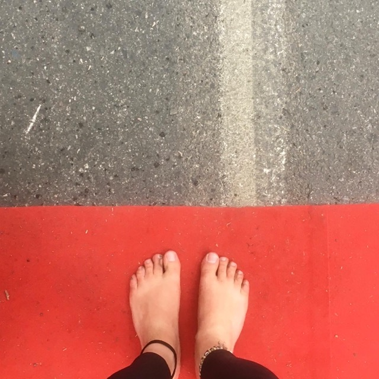
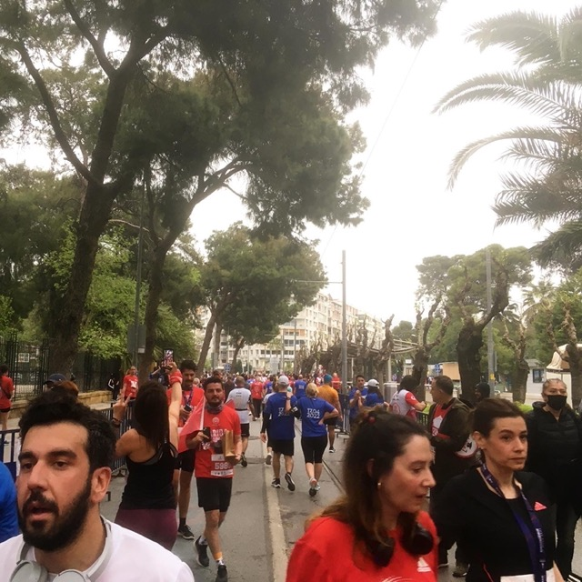
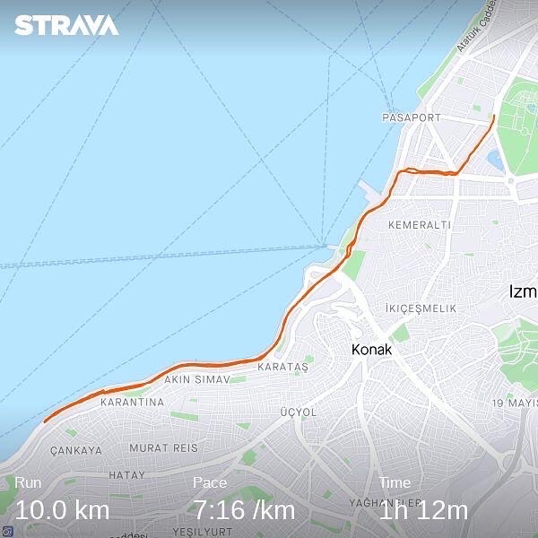
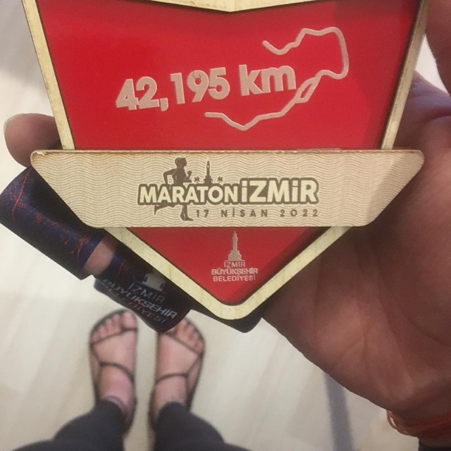

10k at Maraton Izmir
Posted on
My second 10k ever was run at Maraton Izmir today. The results are in: 1 hour and 13 minutes is the duration of this 10k. It’s just about 3 minutes behind the run in Utrecht 4 and a half years ago. And I felt like “it will be worse” while running because I wasn’t looking at my phone until the last 500 metres. So, 1:13 hours is a surprise for me. But the pace is 7:16 whereas it was 6:58 in Utrecht.
The race has been not that fruitful in terms of getting attention due to my barefoot running. Only one person asked why I was #runningbarefoot and one gave a kudos. I saw a guy wearing Vibram Fivefingers but couldn’t say hi.
Finally, the medal is a wooden one this time, find it in the last photo of this post. Strangely enough, I got the full marathon medal. I don’t know whether a 10k version was made. By the way, the sandals you see are handmade by me, I wear them at home, and they debut at my Instagram profile for the first time!
Next stop, Wings for Life World Run at May 8th…
   